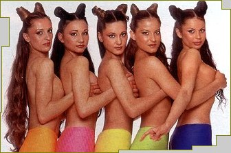

Момичетата от балет 'Сатен' са може би
единствените в екипа на 'Шоуто на Слави
Трифонов', чието изразно средство е
танца, а не думите. Те са тази част от
предаването, която му придава
женственост и сексуалност. Те са просто
ангелите на Слави.
Всички вече ги познават и
има много зрители, които с трепет
очакват началото на шоуто всяка вечер
не заради Слави или Годжи, а имено
заради балерините от 'Сатен'. Техният
танц кара мъжките сърца да подскачат в
ритъма на музиката и кръвта им да кипи.
Жените им завиждат за невероятния шанс
да бъдат толкова близо до Слави и бенда.
И не остава зрител несъпричастен към
тези талантливи и красиви танцуващи
момичета. Стилът на 'Сатен' повече не
може да бъде сбъркан с никой друг и
сигурно няма по-известен балет в
страната от танцуващата формация на 'Шоуто
на Слави Трифонов'. Момичетата танцуват
с много хъс и любов, усмивките не слизат
от лицата им, а красивите им костюми още
повече ги правят може би най-желаните
жени от телевизионния екран. За пореден
път Слави доказва, че наистина работи с
най-добрите... в този случай балерини и
хореографка.
Никой не знае какво щеше
да се случи с балет 'Сатен' ако някога
Слави не ги беше поканил да танцуват в
предаването му. Но сега резултатът е
налице - маркетинговата стратегия на
шоуто притежава и най-красивия и
танцуващ свой елемент - сатенените
момичета, Ангелите на Слави...

Те са
Балет 'Сатен'
Когато Слави Трифонов
избере нещо, то става модно, интересно и
обект на публично внимание. Поредното
откритие на шоумена номер едно у нас е
балет 'Сатен'. Кои са момичетата, които
гарнират с нежност и чар политическото
кабаре на плевенския виолист. Каква е
историята на танцовата трупа с име на
бляскава, луксозна материя. Луксозни
бижута ли са красивите девойки, или
ентусиазирани работохолички, които
танцуват даже и на сън.
Балет 'Сатен': възраст
от 17 до 25 г., любимо хоби - 'Не се сърди,
човече'
Момичетата са в
гримьорната в очакване да се включат в
репетицията на шоуто, която се прави
всеки следобед. Докато им дойде редът,
те играят на 'Не се сърди, човече'.
Местят пионките със същата страст, с
която танцуват. По забравената детска
игра ги запалила Ася - най-голямата от
трупатa.
Първата
любов: танцът
Когато е пролет, когато сте
в пролетта на живота си и когато
обичате един и същ обект от мъжки род,
няма начин да не се засечете. Любимият е
танцът. Влюбените - осем красиви
момичета. Събират се заедно преди три
години през май, за да се отдадат докрай
на голямата си любов. В началото има
много ентусиазъм. Репетират в празния
апартамент на една от тях от ранна
сутрин, до късна вечер. Галина: 'Приятелките
ни мързелуваха на море, а ние работехме,
и то къртовски. После обикаляхме
магазините за платове за костюми, после
избирахме шивачки... Спомнян си този
период с голямо умиление.' За пръв път
се появяват на сцена с края на лятото
с промоция на певицата Йова Иванова.
Седмица след това ги ангажират в
ревютата на Форум 'Българска мода'.
После започват изявите в телевизията, в
клипове, пред публика. Заедно с Петя
Буюклиева танцуват в едночасово шоу.
Слави ги кани за промоцията на албума
си 'Няма не искам' и от там нататък 'Сатен'
го следва в 'Хъшове', а сега и в bTV.
Последният им 'удар' е участието на
Галина Христова в конкурса 'Мис
България', тя беше хореограф на големия
спектаткъл. 'Добър отскок' - е
лаконичният й коментар. после го
илюстрира с термин от балета: гранд
жете, или летящ скок с голям замах и с
високо отделяне от земята. 'Ако дори за
момент съм се съмнявала в резултата,
който исках да постигна, нямаше да се
захващам.'
Студената война:
балерини срещу гимнастички
Необявената официално
война се води на бойното поле на
конкуренцията. Според класическите
балерини гимнастичките са танцьорки
любителки. Галина: 'Чували сме злобни
забележки, че не сме професионални
балерини. В такива ситуации започвам да
се смея, премам го от веселата страна.
Казвам си: такъв е животът. Някои хора
са злобни, други завистливи, трети
говорят само за да се намират на
приказка. Хубавото при нас е, че това,
което правим, се вижда и не можеш да го
отречеш. Хората, които ни ангажират, са
заинтересовани да им свършим работата
добре. Ако човек се труфи, ако има
талант и е достатъчно амбициозен, си
извоюва някакво място. После трябва да
успее да го запази и да го развива. Има
работа за всички. Така че всеки си е
извоювал някакво място и ако наистина
го заслужава, не обръща внимание на
злобни подхвърляния.' Така според
момичетата от 'Сатен' стои въпросът с
конкуренцията.
Един ден на Галина: след
шоуто - разговори по телефона
Галина става сутрин, взема
душ, облича се и излиза. Не закусва, не
пие дори кафе или минерална вода. По
принцип не пие алкохол и не пуши. Отива
в залата, започват репетиция,
обработват всеки детайл до най-малките
подробности, примерно накуед да сочи
малкият пръст на ръката. Продължават с
репетиция на живо с цялото шоу на Слави
в студиото в bTV. Грим, сценични костюми,
представление. 'След това сме толкова
изморени, че нямаме сили за нищо.'
Работният ден приключва след 10 вечерта.
Тогава Галя хапва с приятеля си в някое
заведение, ако е качила килограми, само
салата. 'Смешното е, че когато се
приберем вкъщи, започваме да си говорим
с момичетата по телефона, като че ли не
сме били заедно цял ден!' Приятелят на
Галя е бизнесмен, живеят заедно от една
година, Обичат много да пътуват.
Миналото лято е първата й ваканция,
откакто е сформирана трупата, 'Обикаляхме
къде ли не беше страхотно. Не знам кога
отново ще имам свободно време за такова
прекрасно лично удоволствие.' А иначе
двамата се засичат само вечер. И когато
си кажат лека нощ, Галина отново
започва мислено да танцува. 'Играя наум
и непрекъснато отброявам такта: едно,
две, три, четири... Понякога си мисля
дали пък не се повреждам. Лежа и в
главата ми започват да идват някакви
нови движения. Срещу леглото ни има
огледала. Веднага ставам и започвам да
отигравам движенията, за да не ги
забравя. На другия ден ги показвам на
момичетата. За мен сцената е живота.
Изливам душата си, когато танцувам.
Освен това съм слънчев човек. Радвам се
на живота, заредена съм с положителна
енергия и съм много енергична. И
танците ми са такива.'
сп.
ЕВА; текст Мариана Антонова
|